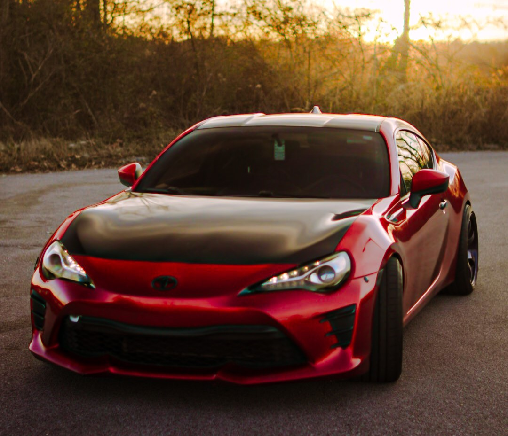
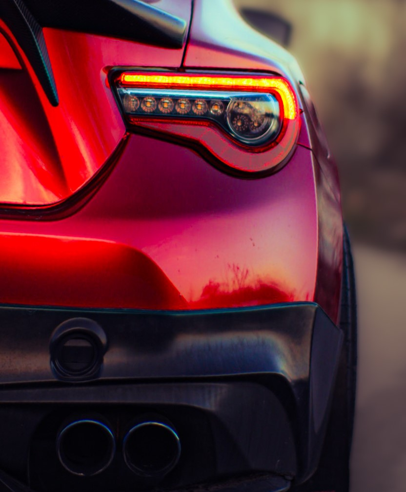

Everything About My Toyota 86

Where It All Started
This here is my 2017 Toyota 86. I've owned this car for 3 years now. I taught myself how to drive manual the day before driving to Georgia to buy this car. I was determined to get this car. I had seen so many video's about this car and how fun it is to drive through the moutians. Its not fast compared to most sports cars, but thats the thing, it wasn't made for that. The way it handles through the curves makes it feel faster than it is. When i got this car it was wrapped white. Took the wrap off to reveal a burnt orange color. I then wrapped it myself, this beautiful red color a year ago.
Money Invested
Since i have had the car, Iv'e spent 1,200 on coilovers, 1600 on wheels, and 1100 on tires. I spent 900 on vinyl wrap and tools to do it myself. 300 on the carbon fiber spoiler. I have not done as much as i would like in the past 3 years with it but as you can tell its a very exspensive hobbie. My end goal with this car is going to cost 20k. Basically the same that i bught if for. I like the feeling of a fast car but also how it handles. Making sure its safe and reliable is top priotity.
